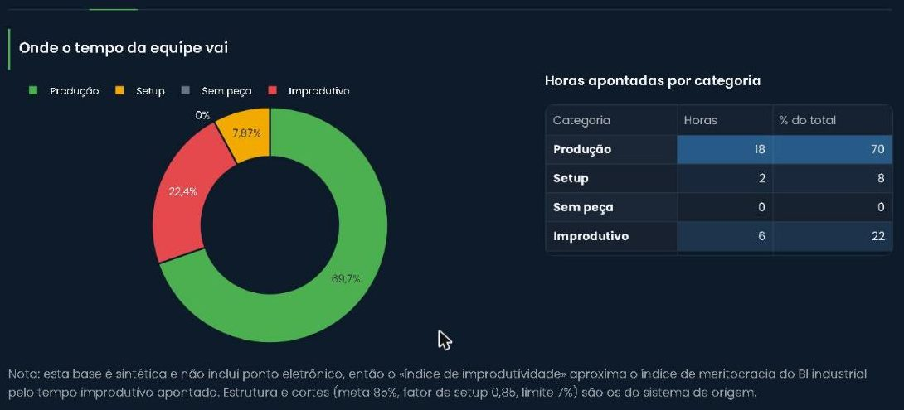
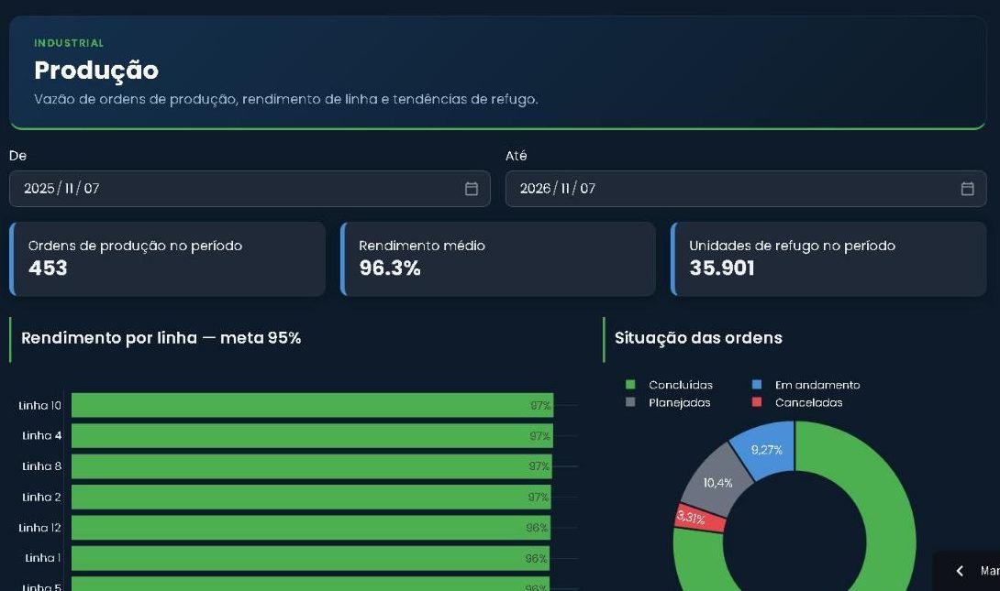

Tempo perdido sem nome
Setup longo, espera de material, parada de máquina e pausa do operador se misturam em um mesmo "não produziu". Sem separar, não dá para atacar a causa certa.
Produzir mais nem sempre significa produzir melhor. A Tazzin reúne produtividade, setup, espera de material, paradas e refugo por operador e por máquina, para decidir com dado e não por percepção.

A fábrica produz, o turno termina, e o que se sabe é o total de peças. O que ficou pelo caminho continua invisível.
Setup longo, espera de material, parada de máquina e pausa do operador se misturam em um mesmo "não produziu". Sem separar, não dá para atacar a causa certa.
Indicador que passa de 100% quase sempre é tempo padrão errado, não operador excepcional. Quando ninguém compara tempo produzido com tempo disponível, o erro passa despercebido.
"Fulano rende pouco" ou "a máquina vive parada" são opiniões. Com o apontamento organizado por pessoa e por máquina, a conversa passa a ter número e contexto.
Um turno de uma máquina, com dados fictícios. Mude os valores, escolha uma situação pronta e veja como a Tazzin separa o tempo, calcula o rendimento e avisa quando algo não faz sentido.
Comece por uma situação:
O Modo TV Industrial é um painel de telão que troca de tela sozinho entre os indicadores da fábrica, para todo mundo ver o que importa sem abrir sistema.
Na demonstração ele gira entre três telas a cada 10 segundos: produção, onde vai o tempo da fábrica e rendimento por operador. Ao lado, uma prévia alimentada com os números do turno que você acabou de montar.
Cada um roda sozinho. Juntos, contam a história inteira do chão de fábrica. Abaixo, o que cada painel faz hoje na plataforma, conforme o código.
Rendimento dos operadores, utilização de máquinas e composição de tempo, com filtro por período.
Produção, rendimento, refugo e o índice que define a bonificação. Verde atinge a meta, amarelo pede atenção, vermelho está abaixo.
O ritmo das ordens de produção e o rendimento de cada linha.
Lançamento do refugo e análise de onde ele vem: motivo, máquina, fornecedor e origem do defeito.
Quando alguém reduz o tempo de uma operação, ou ele piora, isso fica registrado e vira número.

Os valores que você vê aqui (85% de rendimento, 95% por linha, 7% de improdutividade) são os da demonstração. Em um projeto, a Tazzin parte das suas regras e do jeito como a sua fábrica já mede.
Se o seu ERP já recebe apontamentos de produção, o painel lê de lá. Se não recebe, a gente desenha a coleta junto com quem está na linha.
Começamos pelo dado que você já tem e deixamos a regra escrita, para que ninguém dependa de uma planilha que só uma pessoa entende.
De onde vem o tempo e a produção hoje: ERP, coletor, planilha ou papel.
Produção, setup, espera, parada, perda. Com a fábrica, não por decreto.
Primeira versão com os seus números, para ajustar com quem usa.
Indicador absurdo, apontamento a mais e meta fora da faixa viram aviso.
Não necessariamente. Na demonstração não há ponto eletrônico, então o índice de improdutividade usa o tempo improdutivo apontado. Com ponto eletrônico integrado, dá para medir também a presença sem apontamento, que é uma visão mais fiel do tempo ocioso.
Não. A Tazzin fica ao lado do ERP, lê os apontamentos e entrega o que ele não mostra: a divisão do tempo, o rendimento por pessoa e por máquina e os avisos de indicador sem sentido.
São dados sensíveis, e a recomendação é combinar com a liderança e o RH como eles serão usados antes de divulgar. O acesso por perfil faz parte da plataforma, e a regra de bonificação fica escrita e visível para quem participa.
Não. Tudo nesta página, inclusive as capturas da demonstração, usa dados fictícios gerados para navegação. Nenhuma empresa real aparece.
Dá. Cada módulo funciona de forma independente. O comum é começar pelo que mais dói hoje e acrescentar os outros aos poucos.
Conte como o apontamento funciona hoje. Respondemos com uma ideia de painel e por onde começar.